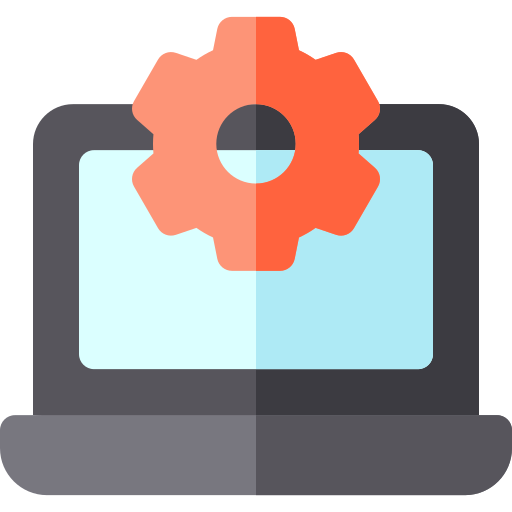
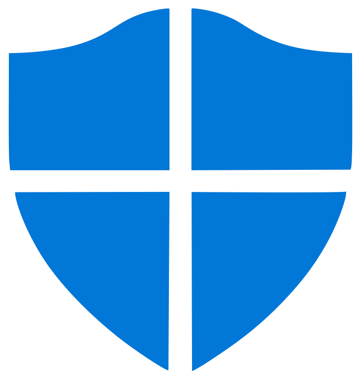
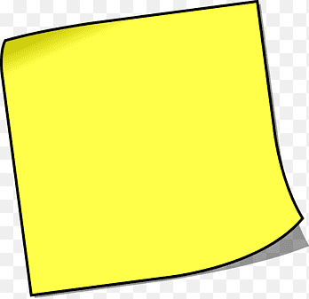

| PROGRAMA | NOME | FUNÇÃO |
| | Calculadora | Usada para realizar cálculos numéricos |
| | Calendário | Instrumento utilizado para medir e representar graficamente o passar do tempo |
| | Câmera | Instrumento óptico para captação de imagens na forma de fotografias individuais, que são armazenadas localmente, transmitidas para outro local, ou ambos |
|  | Configurações | Instrumento para manter algumas informações técnicas, além de facilitar o manuseio das ferramentas de ajustes |
 | Email | Ferramenta que permite compor, enviar e receber mensagens, textos, figuras e outros arquivos através da Internet |
 | Fotos | Instrumento para gravar momentos sobre a história da humanidade |
 | Microsoft Store | Principal meio de distribuição de aplicativos para os usuários, a razão oficial é para permitir que a Microsoft para monitorar aplicativos em busca de falhas de segurança e malwares |
 | Paint 3D | Usado para criação de imagens tridimensionais, seja com modelos pré-definidos ou totalmente criados pelo usuário |
 | Relógio | Aparelho usado para indicar a hora |
|  | Segurança do Windows | Fornece opções de segurança internas para ajudar a proteger seu dispositivo contra ataques de software mal-intencionado |
 | Microsoft Edge | Facilitar o acesso do usuário ao computador |
|  | Notas Autoadesivas | Escrever anotações rápidas em sua área de trabalho do Windows |
 | Filmes e TV | Possibilita alugar ou comprar os filmes de sucesso mais recentes e programas de TV sem comerciais e assisti-los |
 | Dicas | Te ajuda quando necessário |
 | Microsoft Teams | Lugar ideal para ter conversas informais, iterar rapidamente em um projeto, trabalhar com arquivos de equipe e colaborar em entregas compartilhadas |